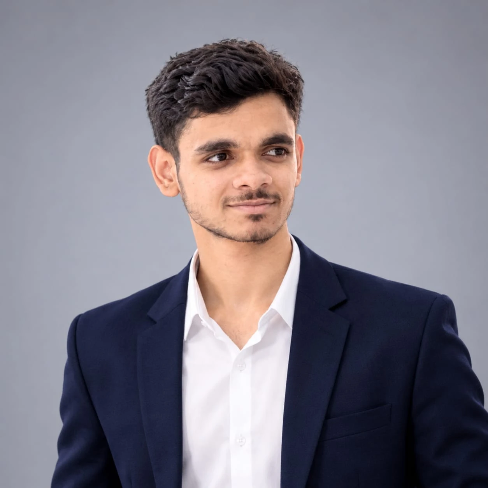
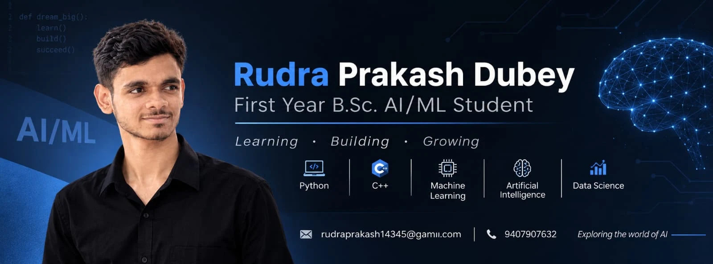
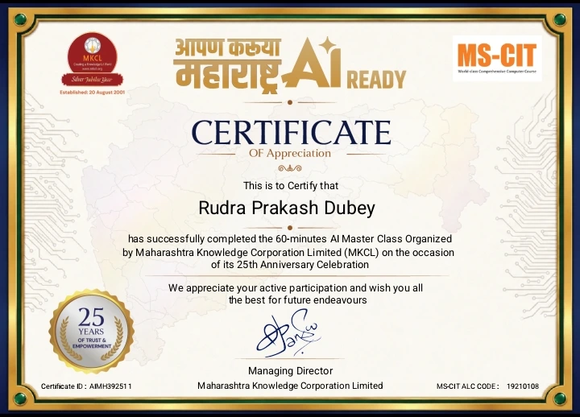

01⌘
Programming
PythonFoundations
C++Learning
Hi, I’m Rudra Prakash Dubey — a first-year AI & ML student learning to turn curiosity into code, and ideas into something useful.


LEARN · BUILD · GROWI’m a student taking my first steps into the world of artificial intelligence and machine learning.
Right now, I’m focused on learning programming, strengthening my problem-solving skills, and understanding the ideas behind intelligent systems. I believe a strong foundation matters—and I’m building mine one concept at a time.
My goal is to grow into an AI/ML engineer who can build thoughtful, practical technology. This website is a snapshot of that journey, and it will evolve as I do.
A transparent view of what I’m learning and practicing today. This list will keep growing with experience.
Pillai HOC College of Arts, Science and Commerce
First-year student building a foundation in programming, logical thinking and introductory AI/ML concepts.
Maharashtra State Board
Completed HSC in the Science stream.
Maharashtra State Board
Completed SSC with 82.20%.
My roadmap is a living one. I’m keeping it focused on learning consistently, trying things hands-on, and documenting what I discover.
I’m currently learning, experimenting, and preparing to build practical projects that solve real-world problems. The project portfolio will grow as I continue my journey.
Follow along on GitHub ↗
Maharashtra Knowledge Corporation Limited (MKCL)
Participated in a 60-minute AI Master Class organized during MKCL’s 25th anniversary celebration.Whether it’s sharing ideas, learning together, or an opportunity to grow—feel free to reach out.